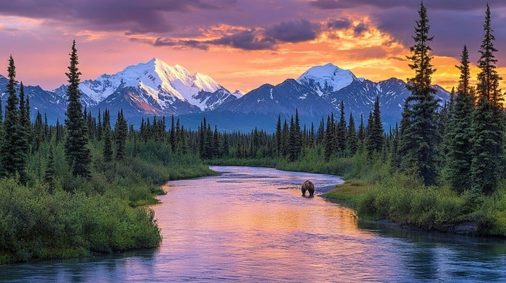
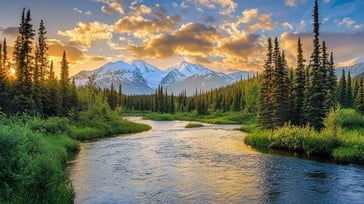
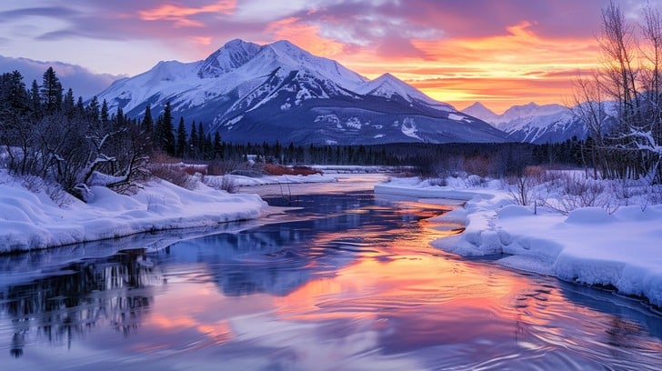
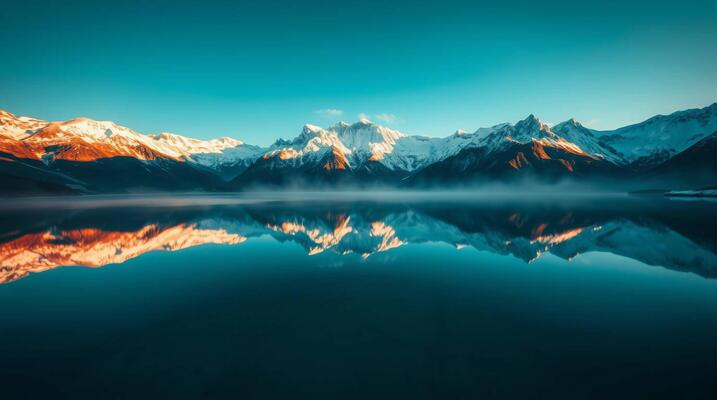

Mountains
Mountains are among the most breathtaking wonders of nature, rising majestically above the earth with peaks that touch the sky. They are home to diverse landscapes, from lush green valleys and dense forests to snow-covered summits that sparkle in the sunlight. Mountains play an important role in regulating our climate, providing fresh water through rivers and glaciers, and offering shelter to countless species of plants and animals. Their towering presence often symbolizes strength, stability, and serenity, making them a source of inspiration for travelers, poets, and explorers throughout history.
The experience of visiting mountains is truly unforgettable. The crisp, cool air, the silence broken only by the rustle of leaves or the call of a bird, and the sweeping views from high altitudes create a sense of peace and wonder. Trekking along winding trails, witnessing sunrises and sunsets from the peaks, and feeling the closeness to nature give visitors a refreshing escape from busy city life. For many, mountains provide not just adventure but also spiritual renewal, reminding us of nature’s grandeur and the smallness of our worries in comparison.